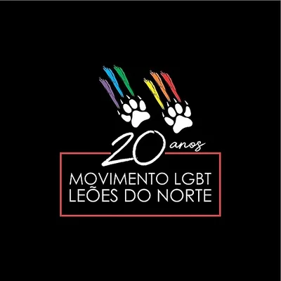
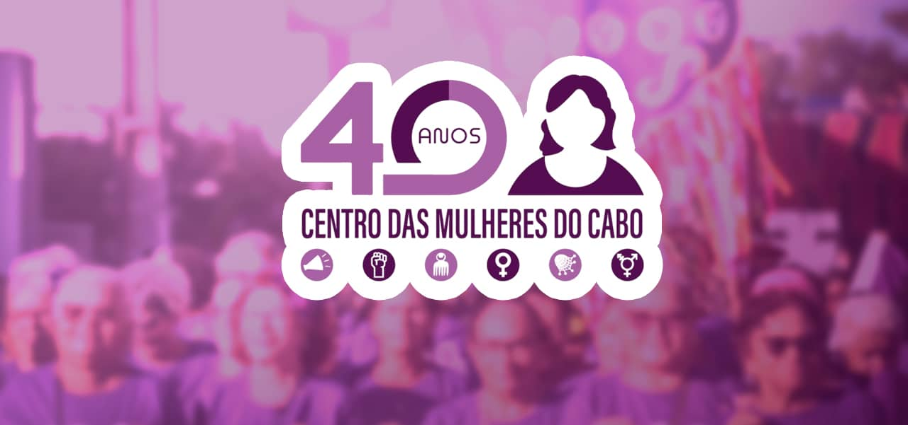
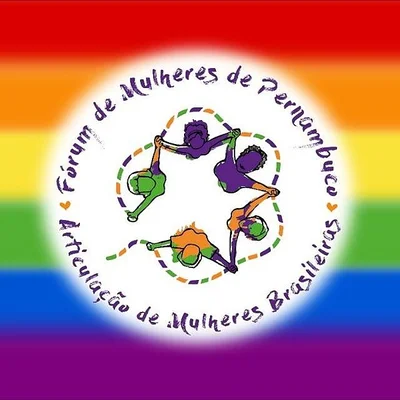
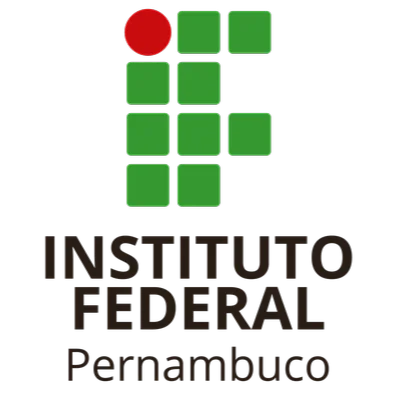
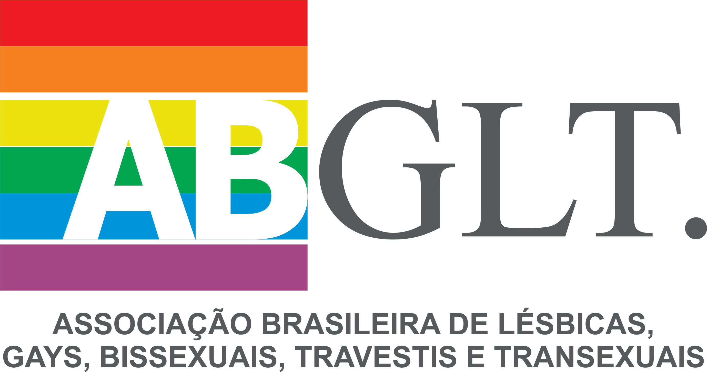
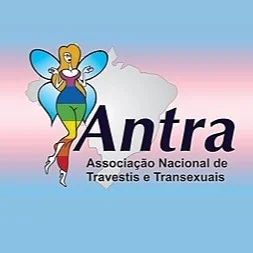

Rede LGBT do Interior de Pernambuco
A Rede LGBT do Interior de PE é uma articulação de grupos e ativistas da causa LGBT que vivem no interior pernambucano e atuam no controle social das políticas públicas LGBT.
Conheça

Movimento LGBT Leões do Norte
O "Movimento Leões do Norte" é uma organização recifense que atua em defesa dos direitos humanos da população LGBTQI+ em Pernambuco. Fundado em 2001, a ONG tem como missão combater a discriminação e contribuir para a construção de políticas públicas que garantam a cidadania e o respeito por essa população.
Conheça

AMOSTRANS
A AMOTRANS-PE (Articulação e Movimento para Travestis e Transexuais), fundada em 2008, é uma instituição construída por travestis e transexuais, em foco em políticas públicas e luta pelos direitos da própria população, somando à luta do movimento LGBTQIAP+.
Conheça

CORES Petrolina
A CORES um grupo de articulação política do movimento LGBTQIA+ que atua na luta contra o preconceito e a discriminação, através da conscientização política e da promoção dos direitos humanos, bem como da cidadania de lésbicas, gays, bissexuais, Travestis, transexuais e mais do Vale do São Francisco , sem distinções religiosas, étnicas raciais, ideológicas, de gênero, orientação sexual, de faixas etárias ou partidárias
Conheça

S.O.S Corpo
Organização autônoma sediada em Recife (PE), fundada em 1981, cuja luta se pauta no feminismo antissistêmico e em defesa da justiça socioambiental.
Conheça

Centro de Mulheres do Cabo
O Centro das Mulheres do Cabo é uma organização feminista e sua missão é construir a igualdade de gênero, raça e afirmar os direitos humanos das mulheres na perspectiva feminista.
Conheça

Fórum de Mulheres de Pernambuco
A favor do direito das mulheres a 30 anos, O forum das mulheres é uma articulação feminista antirracista e anticapitalista de âmbito estadual, fundada em 1988, que constrói nacionalmente a Articulação de Mulheres Brasileiras (AMB).
Conheça

IFPE Campus Palmares
Instituto Federal de Pernambuco campus Palmares é voltado a atender às demandas do mercado produtivo e da indústria, ao desenvolvimento do saber científico e à uma formação humanística.
Conheça

abglt
A Associação Brasileira de Lésbicas, Gays, Bissexuais, Travestis, Transexuais e Intersexos, designada pela sigla ABGLT, cujo nome e fins foram aprovados em 31 de Janeiro de 1995, data de sua fundação, por 31 entidades, é uma pessoa jurídica de direito privado, sem fins lucrativos e com duração por tempo indeterminado.
Conheça

Antra
A Associação Nacional de Travestis e Transexuais é uma instituição brasileira voltada a suprir as necessidades da população de travestis e transexuais, assim como combater a transfobia. Anteriormente era denominada Rede Nacional de Travestis, antes chamada de ASTRAL.
Conheça

elas+
Iniciativa pioneira no país, o ELAS+ Doar para Transformar foi fundado por cinco ativistas vindas de diversos movimentos sociais e culturais. Criado para apoiar grupos liderados por mulheres e pessoas trans que não tinham acesso a financiamento, principalmente devido ao racismo e à LGBTfobia, foi lançado oficialmente em 30 de agosto de 2000, após o “Seminário Mulheres: Responsabilidade Social e Recursos Financeiros”, promovido pela organização feminista CEMINA – Comunicação, Educação e Informação em Gênero. Antes Inicialmente chamava-se Fundo Ângela Borba. Em 2005, expandimos a homenagem à essa importante feminista para todas as mulheres brasileiras, adotando o nome Fundo Social ELAS.
Conheça